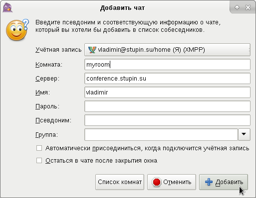

Мода на сети обмена мгновенными сообщениями приходит и уходит. Сначала это был ICQ, потом Skype, в последнее время были популярны WhatsApp и Viber, а теперь многие пользователи отказываются от них в пользу Telegram. Все эти сети - централизованные и принадлежат определённому хозяину, через серверы которого проходит вся переписка. Этот хозяин может изменить условия использования сервиса, никого не предупреждая.
Например, в ICQ было запрещено использовать сторонние клиенты, протокол был закрыт и часто менялся. Официальный клиент показывал пользователям рекламу, а из-за смены протокола неофициальные клиенты часто переставали работать. Самое же интересное в этой сети заключалось в том, что ICQ по пользовательскому соглашению, имел право пользоваться содержанием переписки пользователей по своему усмотрению. Сейчас, когда ICQ купил Mail.Ru Group, насколько мне известно, многие ограничения сняты: можно использовать неофициальные клиенты, протокол не меняют, рекламу не показывают. Однако, мода успела смениться и приток новых пользователей в ICQ сейчас в значительной мере иссяк, а многие прежние пользователи уже перескочили на другую, более модную альтернативу. Тогда это был Skype.
В Skype тоже имелись свои особенности. Например, версии Skype для Linux имели ограниченный функционал, отстающий от версий для Windows. Поддерживался только клиент для 32-битной платформы Linux.
WhatsApp невозможно пользоваться, не имея достаточно современного мобильного телефона с подключением к сети интернет. Нельзя установить на компьютер программу для общения в этой сети, не устанавливая программу на мобильный телефон. Все пользователи классических телефонов типа Nokia оказываются в пролёте. Это особенно удивительно, потому что за основу этой сети был взят протокол XMPP и одна из реализаций Jabber-серверов. Надо очень постараться, чтобы превратить изначально демократичные средства связи в какой-то жуткий тоталитаризм.
Telegram значительно лучше всех своих предшественников по крайней мере в том, что его протокол открыт. В этой сети официально можно создавать свои программы-боты, для чего предусмотрен свой собственный интерфейс прикладных программ - API.
Но все эти сети изначально не предусматривают главной свободы - свободы создать свой собственный сервер. Jabber - это распределённая сеть для обмена мгновенными сообщениями, которая работает по принципам, сходным с теми, на которых работает электронная почта: любой пользователь сети интернет, имеющий постоянное подключение с постоянным IP-адресом, может настроить собственный сервер, который сможет пересылать сообщения на другие серверы и принимать от них сообщения. Протокол, по которому взаимодействую клиенты и серверы, открыт и называется XMPP. Идентификаторы пользователей похожи на адреса электронной почты и сокращённо называются JID, что полностью звучит как Jabber ID - Jabber-идентификатор.
Существует несколько популярных Jabber-серверов. Настройка одного из них, который называется Prosody, и будет рассмотрена в этой статье. Сервер написан на языке Lua и выгодно отличается от конкурентов умеренным использованием системных ресурсов. Если вам нужно настроить Jabber-сервер для небольшого количества пользователей, то этот сервер будет идеальным выбором.
Установим пакет, в котором находится Jabber-сервер Prosody:
# apt-get install prosody
По умолчанию включено обслуживание домена localhost. Отключим его, удалив ссылку /etc/prosody/conf.d/localhost.cfg.lua, которая указывает на файл /etc/prosody/conf.avail.localhost.cfg.lua:
# rm /etc/prosody/conf.d/localhost.cfg.lua
В файле /etc/prosody/conf.avail/example.com.cfg.lua есть пример настроек для домена example.com. По образу и подобию этого файла создадим файл для своего домена. В моём случае это будет домен stupin.su, а файл будет называться /etc/prosody/conf.avail/stupin.su.cfg.lua:
VirtualHost "stupin.su"
В этой конфигурации настроено обслуживание домена stupin.su - всё предельно просто.
Чуть ниже имеется строчка, отключающая обработку этого домена:
enabled = false
Нужно удалить эту строчку, или заменить значение на true.
Теперь нужно включить использование этого файла, создав символическую ссылку на него в каталоге /etc/prosody/conf.d:
# cd /etc/prosody/conf.d # ln -s /etc/prosody/conf.avail/stupin.su.cfg.lua .
Отключим пока что глобальную поддержку SSL. Для этого нужно открыть основной файл конфигурации /etc/prosody/prosody.cfg.lua, найти в нём глобальные настройки SSL и закомментировать их, приведя к следующему виду:
-- These are the SSL/TLS-related settings. If you don't want
-- to use SSL/TLS, you may comment or remove this
-- ssl = {
-- key = "/etc/prosody/certs/localhost.key";
-- certificate = "/etc/prosody/certs/localhost.crt";
--}
В том же файле можно указать список учётных записей, которые будут обладать правами администраторов на сервере:
admins = { "vladimir@stupin.su" }
Перезапустим сервер Prosody, чтобы его новые настройки вступили в силу:
# systemctl restart prosody.service
В моей системе IPv6 был отключен, из-за чего Prosody запуститься не мог. Чтобы Prosody не пытался открывать на прослушивание адреса IPv6, можно добавить в файл конфигурации /etc/prosody/prosody.cfg.lua явное указание на список прослушиваемых интерфейсов. В моём случае нужно открывать на прослушивание все адреса IPv4, поэтому я добавил в конфигурацию такой фрагмент:
interfaces = { "*" }
Теперь добавим нового пользователя при помощи такой команды, которая дважды спросит пароль нового пользователя:
# prosodyctl adduser vladimir@stupin.su
Можно добавить нового пользователя, указав его пароль прямо в командной строке. Эту команду удобно использовать из сценариев, например, для массового заведения пользователей:
# prosodyctl register vladimir stupin.su pa$$w0rd
У меня есть только один Jabber-сервер, для которого я создам соответствующую A-запись:
jabber IN A 83.83.185.185
Настроим теперь записи в DNS, чтобы Jabber-клиенты и другие Jabber-серверы знали, куда надо устанавливать подключение. В простейшем случае нужно добавить всего две SRV-записи: одна укажет адрес и порт подключения клиентов, а другая - для соединений серверов между собой:
_xmpp-client._tcp IN SRV 0 0 5222 jabber.stupin.su. _xmpp-server._tcp IN SRV 0 0 5269 jabber.stupin.su.
Цифры 0 0 задают приоритет и вес соответствующего сервера. Прежде всего будет использоваться тот сервер, приоритет которого выше - сервер с меньшим числом приоритета. Среди серверов с одинаковым приоритетом, используемый выбирается случайным образом, однако предпочтение отдаётся тем, вес которых выше. Вес сервера по отношению к сумме весов всех серверов данного приоритета и будет вероятностью выбора этого сервера.
Подробности можно прочитать здесь: SRV Records
Для проверки настроек я воспользуюсь Jabber-клиентом Pidgin. Если у вас он ещё не установлен, то установить его можно из стандартных репозиториев дистрибутива, например, такой командой:
# apt-get install pidgin
Теперь запускаем программу через меню:
В запустившейся программе находим меню "Уч. записи" и выбираем в нём пункт "Управление учётными записями":
В открывшемся диалоговом окне "Учётные записи" нажимаем кнопку "Добавить...":
В открывшемся диалоговом окне "Добавить учётную запись" выбираем из выпадающего списка протокол XMPP:
И заполняем оставшиеся поля. В поле "Имя пользователя" вводим часть JID, находящуюся слева от символа @, а в поле "Домен", соответственно, вводим часть JID, которая находится справа от символа @. Одной и той же учётной записью можно пользоваться на нескольких компьютерах одновременно. Чтобы отличать друг от друга такие компьютеры, на каждом из них можно задать своё собственное имя, которое называется ресурсом. Например, компьютер, на котором я установил Pidgin стоит дома, поэтому я прописываю в поле "Ресурс" имя "home". В поле "Пароль" введём пароль и отметим ниже галочку "Запомнить пароль", чтобы его не нужно было вводить при каждом подключении к серверу. Наконец, в поле "Локальный псевдоним" можно ввести своё имя, которое будет отображаться в вашем окне переписки с другим пользователем:
Поскольку на сервере пока не настроены функции шифрования, перейдём на вкладку "Дополнительно" и выберем из выпадающего списка в поле "Безопасность соединения" значение "Если доступно, использовать шифрование", после чего нажимаем кнопку "Добавить":
В диалоговом окне "Учётные записи" появится новая, только что добавленная нами учётная запись. Закроем диалоговое окно, нажав на кнопку "Закрыть":
Теперь Pidgin установил подключение от имени только что созданной учётной записи, список контактов у которой пока что пуст:
Добавим свою собственную учётную запись в список контактов. Для этого в меню "Собеседники" выберем пункт "Добавить собеседника...":
В открывшемся диалоговом окне "Добавить собеседника" вводим в поле "Имя пользователя собеседника" JID нашей учётной записи, а в поле "Псевдоним" вводим имя, под которым эта учётная запись будет фигурировать в переписке. После этого нажимаем кнопку "Добавить":
В списке контактов появится новый собеседник. Щёлкнем дважды по строчке с его именем:
Откроется окно беседы. Наберём в нём тестовый текст и отправим его:

Отправленный текст вернётся в ответ:
Вот мы и убедились, что сервер и учётная запись функционируют. Приятно поговорить с умным человеком, но можно попробовать добавить собеседников из другого домена, на другом Jabber-сервере. Для этой проверки я воспользовался двумя своими учётными записями в разных доменах. Получилось такое вот раздвоение личности - беседуют доктор Джекилл и мистер Хайд:
Некоторые серверы могут отказываться использовать незащищённые соединения и требуют, чтобы соединение было защищёно сертификатом, подписанным в одном из доверенных удостоверяющих центров. Поэтому сразу после проверки работоспособности Jabber-сервера первым делом стоит приступить к настройке SSL.
По умолчанию Prosody использует системный вызов select для обработки событий на TCP-подключениях с клиентами и серверами. Этот системный вызов не обладает высокой эффективностью, вместо него в Linux был создан новый системный вызов epoll, который достигает более высокой эффективности из-за отсутствия необходимости передавать между ядром и пользовательским приложением объёмные структуры данных.
Если в журнале /var/log/prosody/prosody.log имеется сообщение следующего вида, то это значит, что используется системный вызов select:
Mar 31 00:12:07 startup info Prosody is using the select backend for connection handling
Для использования системного вызова epoll необходимо установить в систему дополнительный пакет lua-event:
# apt-get install lua-event
И включить его использование, добавив в файл конфигурации /etc/prosody/prosody.cfg.lua дополнительную опцию:
use_libevent = true
После изменения файла конфигурации осталось перезапустить Prosody, чтобы он начал использовать системный вызов epoll:
# systemctl restart prosody.service
После перезапуска в журнале /var/log/prosody/prosody.log должны появиться сообщения следующего вида, свидетельствующие об использовании системного вызова epoll:
Mar 31 00:20:02 startup info Prosody is using the libevent epoll backend for connection handling
В целях отладки можно воспользоваться самозаверенным сертификатом, который можно сгенерировать при помощи одной команды:
# cd /etc/prosody/certs/ # openssl req -x509 -sha256 -nodes -days 365 -newkey rsa:2048 -keyout stupin.su.key -out stupin.su.crt # chown root:prosody stupin.su.key stupin.su.crt # chmod u=rw,g=r,o= stupin.su.key stupin.su.crt
Однако, для постоянного использования лучше взять сертификат, заверенный удостоверяющим центром, которому доверяют разработчики большинства операционных систем и популярных программ. Я воспользуюсь сертификатами, полученными в удостоверяющем центре Let's Encrypt. Описание процедуры получения сертификатов можно найти в моей статье Получение SSL-сертификата от удостоверяющего центра Let's Encrypt в Debian Stretch.
Скопируем сертификат и приватный ключ в каталог Prosody и выставим соответствующие права доступа:
cat /etc/letsencrypt/live/stupin.su/privkey.pem > /etc/prosody/certs/stupin.su.key cat /etc/letsencrypt/live/stupin.su/fullchain.pem > /etc/prosody/certs/stupin.su.crt chown root:prosody /etc/prosody/certs/stupin.su.key /etc/prosody/certs/stupin.su.crt chmod u=rw,g=r,o= /etc/prosody/certs/stupin.su.key /etc/prosody/certs/stupin.su.crt
Изменим файл /etc/prosody/conf.d/stupin.su.cfg.lua следующим образом:
VirtualHost "stupin.su"
ssl = {
certificate = "/etc/prosody/certs/stupin.su.crt";
key = "/etc/prosody/certs/stupin.su.key";
}
Осталось перезапустить сервер Prosody, чтобы новые настройки вступили в силу:
# systemctl restart prosody.service
Чтобы при продлении сертификата он вместе с приватным ключом автоматически копировался в каталог /etc/prosody/certs/, я настрою скрипт, вызываемый в процессе продления сертификата. Пропишем в файл конфигурации /etc/letsencrypt/cli.ini следующее содержимое (если файла ещё нет, то его нужно создать):
renew-hook /etc/letsencrypt/renewhook.sh
Теперь создадим сам скрипт /etc/letsencrypt/renewhook.sh со следующим содержимым:
#!/bin/sh
set -e
for domain in $RENEWED_DOMAINS; do
case $domain in
stupin.su)
chmod o= `readlink -f "$RENEWED_LINEAGE/privkey.pem"`
daemon_cert_root=/etc/prosody/certs
umask 077
cat "$RENEWED_LINEAGE/fullchain.pem" > "$daemon_cert_root/$domain.crt"
cat "$RENEWED_LINEAGE/privkey.pem" > "$daemon_cert_root/$domain.key"
chown root:prosody "$daemon_cert_root/$domain.crt" \
"$daemon_cert_root/$domain.key"
chmod u=rw,g=r,o= "$daemon_cert_root/$domain.crt" \
"$daemon_cert_root/$domain.key"
systemctl restart prosody.service > /dev/null
;;
esac
done
И выставим права доступа к нему:
# chown root:root /etc/letsencrypt/renewhook.sh # chmod u=rwx,go= /etc/letsencrypt/renewhook.sh
Чтобы не позволять подключаться к серверу клиентам, которые не поддерживают шифрование, в файл /etc/prosody/prosody.cfg.lua можно прописать такую опцию:
c2s_require_encryption = true
Чтобы требовать у серверов предоставить сертификат, подписанный удостоверяющим центром, входящим в список доверенных, можно прописать в файл /etc/prosody/prosody.cfg.lua такую опцию:
s2s_secure_auth = true
Если вы включили эту опцию, то можете задать список доменов, у сертификатов которых подпись проверяться не будет. Для этого в файл /etc/prosody/prosody.cfg.lua надо добавить опцию со списком доменов:
s2s_insecure_domains = { "gmail.com" }
Если же опция s2c_secure_auth не была включена, то можно задать список доменов, у которых всё же будет проверяться наличие подписи от одного из удостоверяющих центров, входящих в список доверенных. Для этого в файл /etc/prosody/prosody.cfg.lua нужно добавить опцию со списком таких доменов:
s2s_secure_domains = { "jabber.org" }
В статье Advanced SSL/TLS configuration есть ряд рекомендаций по усилению безопасности. В частности, можно запретить использование небезопасных протоколов SSLv2 и SSLv3, небезопасной функции сжатия трафика в TLSv1. Для этого в секции ssl файла /etc/prosody/conf.avail/stupin.su.cfg.lua добавим такие опции:
options = { "no_sslv3", "no_sslv2", "no_ticket", "no_compression", "cipher_server_preference", "single_dh_use", "single_ecdh_use" };
ciphers = "HIGH+kEDH:HIGH+kEECDH:HIGH:!PSK:!SRP:!3DES:!aNULL";
Также не рекомендуется использовать RC4: IETF решил окончательно избавиться от RC4. Для его отключения можно добавить в настройку ciphers соответствующую строку "!RC4". В Prosody начиная с версии 0.9.2 RC4 отключен по умолчанию. Однако если вы решили поменять опции по умолчанию, то нужно прописать эту опцию явно.
По умолчанию в Prosody используются наиболее оптимальные настройки SSL. Страница с рекомендациями специально окрашена в цвета, неприятные для чтения, чтобы отпугнуть людей, бездумно копирующих рекомендации из первого попавшегося источника. Бездумное копирование настроек во многих случаях может привести к снижению безопасности системы, т.к. статьи в интернете быстро устаревают и рекомендованные в статье настройки могут оказаться менее безопасными, чем настройки по умолчанию.
Рекомендуется также настроить опцию протокола TLS под названием Perfect forward secrecy, которая позволяет защитить сеансовые ключи даже в том случае, если скомпрометированы долговременные ключи. Однако для Forward Secrecy необходима поддержка алгоритма Диффи-Хеллмана, которая отсутствует в пакете lua-sec версий 0.4.x. К счастью, в Debian Stretch поставляется lua-sec версии 0.6, поэтому мы можем настроить эту опцию.
Ключ для протокола Диффи-Хеллмана можно сгенерировать следующим образом:
# cd /etc/prosody/certs/ # openssl dhparam -out stupin.su.dh-2048.pem 2048 # chown prosody:prosody stupin.su.dh-2048.pem # chmod u=rw,go= stupin.su.dh-2048.pem
Осталось добавить сгенерированный долговременный ключ в секции ssl файла /etc/prosody/conf.avail/stupin.su.cfg.lua:
dhparam = "/etc/prosody/certs/stupin.su.dh-2048.pem";
После всех изменений нужно перезапустить сервер Prosody, чтобы новые настройки вступили в силу:
# systemctl restart prosody.service
Проверить степень безопасности Jabber-сервера можно на сайте check.messaging.one.
Для Prosody имеется неофициальный модуль, позволяющий использовать для аутентификации пользователей сервис SASL от Dovecot. Использование SASL от Dovecot позволит использовать одни и те же учётные записи с одними и теми же паролями как для доступа к почтовому ящику, так и для доступа к серверу Jabber. Если Dovecot был настроен так, что использует информацию в базе данных PostfixAdmin, то PostfixAdmin можно использовать для создания, удаления и изменения одновременно как почтовых ящиков, так и одноимённых учётных записей Jabber. Пример такой настройки Dovecot можно посмотреть в моей статье: Установка и настройка Dovecot.
Скачать исходные тексты модуля вручную можно следующим образом:
Чтобы воспользоваться неофициальным модулем, сначала мы соберём пакет для Debian. Для скачивания исходных текстов модуля и сборки deb-пакета я подготовил скрипт:
#!/bin/sh
wget --quiet --content-disposition http://hg.prosody.im/prosody-modules/archive/tip.tar.gz/mod_auth_dovecot/
COMMIT=`ls Community-Modules-*.tar.gz | head -n1 | sed 's/Community-Modules-\(.*\).tar.gz/\1/'`
tar xzf Community-Modules-$COMMIT.tar.gz
rm Community-Modules-$COMMIT.tar.gz
PACKAGE=prosody-mod-auth-dovecot
DATETIME=`date "+%Y%m%d%H%M%S"`
VERSION="0.$DATETIME"
DIR=${PACKAGE}_${VERSION}
mkdir -p $DIR/DEBIAN
# Формируем описание пакета
cat - > $DIR/DEBIAN/control <<END
Package: $PACKAGE
Version: $VERSION
Architecture: all
Maintainer: Vladimir Stupin <vladimir@stupin.su>
Description: Prosody module mod_auth_dovecot
Prosody module mod_auth_dovecot
Homepage: http://prosody.im
END
chmod 755 $DIR/DEBIAN/control
# Формируем содержимое пакета
mkdir -p $DIR/usr/lib/prosody/modules/
cp -R Community-Modules-$COMMIT/mod_auth_dovecot/auth_dovecot/* $DIR/usr/lib/prosody/modules/
rm -R Community-Modules-$COMMIT
FILE=${PACKAGE}_${VERSION}_all.deb
# Формируем пакет
dpkg-deb -b $DIR $FILE >/dev/null 2>&1
rm -R $DIR
Назначим этому файлу права для выполнения:
$ chmod +x make_prosody_mod_auth_dovecot.sh
И запустим его:
$ ./make_prosody_mod_auth_dovecot.sh
Собранный пакет с именем типа prosody-mod-auth-dovecot_0.57d4680b86a4.deb устанавливаем командой:
# dpkg -i prosody-mod-auth-dovecot*.deb
Осталось настроить Dovecot так, чтобы он создавал при запуске Unix-сокет, доступный для Prosody, а Prosody настроить так, чтобы этот модуль был включен и обращался к Unix-сокету Dovecot.
Открываем файл /etc/dovecot/conf.d/10-master.conf на редактирование, находим секцию service auth и вписываем в неё:
unix_listener prosody-auth-client {
mode = 0660
user = prosody
group = prosody
}
Перезапустим Dovecot, чтобы он узнал новые настройки и создал нужный нам Unix-сокет:
# systemctl restart dovecot.service
Открываем файл /etc/prosody/prosody.cfg.lua на редактирование, находим секцию modules_enabled и вписываем модуль:
"auth_dovecot";
Находим ниже строку authentication и вместо неё вписываем следующие три строки:
authentication = "dovecot" dovecot_auth_socket = "/var/run/dovecot/prosody-auth-client" auth_append_host = true
Перезапустим Prosody, чтобы он начал использовать новый модуль:
# systemctl restart prosody.service
Можно проверять работу учётной записи.
Чтобы пользователи могли создавать конференции, нужно добавить в файл с настройками домена /etc/prosody/conf.avail/stupin.su.cfg.lua одну строчку:
Component "conference.stupin.su" "muc"
Чтобы комнаты на сервере могли создавать только администраторы, можно включить в файле /etc/prosody/conf.avail/stupin.su.cfg.lua у модуля конференций дополнительную опцию restrict_room_creation:
Component "conference.stupin.su" "muc"
restrict_room_creation = true
Чтобы комнаты могли создавать только пользователи, имеющие учётную запись на сервере, можно присвоить этой опции значение "local":
Component "conference.stupin.su" "muc"
restrict_room_creation = "local"
Перезапустим сервер Prosody, чтобы новые настройки вступили в силу:
# systemctl restart prosody.service
Теперь нужно прописать в DNS, какой сервер будет обслуживать домен конференций conference.stupin.su. Делается это точно так же, как и для основного домена. Единственное отличие заключается в том, что в этом случае нужна только запись о серверном порте:
_xmpp-server._tcp.conference IN SRV 0 5 5269 jabber.stupin.su.
Чтобы проверить работу конференций, воспользуемся Pidgin. Подключимся к нашему серверу под нашей учётной записью и в меню "Собеседники" выберем пункт "Добавить чат...":
В открывшемся диалоговом окне "Добавить чат" в поле "Имя комнаты" введём имя, которое будет стоять слева от символа собачки. В поле "Сервер" введём имя домена для конференций - conference.stupin.su. Если вы хотите, чтобы в конференцию не смогли заходить люди, не знающие пароля от комнаты, то его можно задать в поле "Пароль":
Окно конференции выглядит следующим образом:
В конференциях можно использовать команды. Список команд можно узнать, введя команду "/help".
Ниже изображена справка, выведенная командой "/help":
Чтобы уточнить информацию о какой-то конкретной команде, можно ввести команду "/help" и указать ей в качестве аргумента имя команды, о которой мы хотим получить справку. Например, наведём справки о команде "/topic", для чего введём команду "/help topic".
Ниже можно увидеть справку по команде "/topic":
Команда "/topic" позволяет менять тему комнаты. Попробуем её поменять командой "/topic Моя комната":
Аналогичным образом наведём справки по команде "/invite" и пригласим в комнату нового посетителя.:
Посетитель получит приглашение в комнату в виде диалогового окна:
Если приглашённый пользователь принимает приглашение, то он появится в списке посетителей слева:
Итак, конференции работают. С помощью команд можно сделать комнату постоянной, чтобы она не пропадала, если пользователь, создавший её, вдруг отключится. Посетители могут аналогичным образом зарезервировать своё имя, чтобы никто его не занял в их отсутствие. Можно менять тему комнаты, приглашать новых посетителей, давать им дополнительные права.
При передаче файлов от одного собеседника к другому, они устанавливают друг с другом прямое соединение. Один из них в этом случае будет выступать в роли сервера, ожидая подключения со стороны другого. Однако, может так случиться, что оба собеседника не имеют "белых" IP-адресов в интернете, а оба находятся за NAT-серверами. В таком случае ни один из собеседников не сможет выступать в роли сервера, но они оба могут выступать только в роли клиента и могут установить куда-то подключение.
Чтобы выйти из затруднительной ситуации, можно прибегнуть к помощи третьей стороны, которая обладает "белым" IP-адресом и будет ожидать подключения от обоих собеседников, транслируя их пакеты друг к другу. В роли такой третьей стороны может выступать прокси-сервер, работающий по протоколу SOCKS5. Более того - таким прокси-сервером может быть сам Jabber-сервер Prosody, если на нём включить соответствующий модуль - proxy65. Займёмся его настройкой. Для этого откроем файл конфигурации нашего домена /etc/prosody/conf.avail/stupin.su.cfg.lua и добавим в него следующие строчки:
Component "proxy.stupin.su" "proxy65"
proxy65_acl = { "stupin.su" }
Первая строчка задаёт доменное имя SOCKS5-прокси, вторая строчка ограничивает Jabber-идентификаторы пользователей, которым разрешено пользоваться этим прокси. В данном случае прокси находится по адресу proxy.stupin.su и будет обслуживать только пользователей, Jabber-идентификатор которых находится в домене stupin.su. Перезапустим Jabber-сервер Prosody, чтобы его настройки вступили в силу:
# systemctl restart prosody.service
Протокол BOSH позволяет клиентам подключаться к Jabber-серверу по протоколу HTTP или HTTPS. BOSH расшифровывается как Bidirectional-streams Over Synchronous HTTP - двунаправленные потоки данных через синхронный HTTP. Этот протокол обычно применяется либо веб-приложениями, выполняющими функции Jabber-клиента, либо обычными приложениями, если системный администратор запретил подключения к клиентскому порту Jabber-сервера. Для настройки BOSH в Prosody воспользуемся соответствующей статьёй: Setting up a BOSH server. В отличие от рассмотренных выше модулей, этот модуль можно включить только глобально. Для этого откроем файл /etc/prosody/prosody.cfg.lua и раскомментируем в нём строчку с модулем bosh:
modules_enabled = {
...
-- HTTP modules
"bosh"; -- Enable BOSH clients, aka "Jabber over HTTP"
--"http_files"; -- Serve static files from a directory over HTTP
...
};
Если Jabber-клиент написан на JavaScript и выполняется в браузере, то могут возникнуть проблемы. Обычно такие скрипты не имеют прав подключаться к адресам, отличным от адреса веб-сайта, на котором они находятся. Поэтому, если для подключения к Jabber-серверу используется веб-приложение, работающее на другом адресе (на другом порту или домене), то такое приложение не будет работать. Чтобы выйти из этой затруднительной ситуации, мы воспользуемся возможностью проксирования запросов, имеющейся в веб-сервере nginx. Веб-сервер будет принимать запросы по тому же адресу, где работает веб-приложение, и будет проксировать их на встроенный в Prosody веб-сервер.
Модуль bosh использует функции модуля http - встроенного веб-сервера Prosody. Для того, чтобы BOSH был доступен только со стороны nginx, работающего на одном компьютере с Prosody, добавим в файл /etc/prosody/prosody.cfg следующие строчки с настройками модуля http:
http_ports = { 5280 }
http_interfaces = { "127.0.0.1" }
https_ports = { }
https_interfaces = { }
Эти строчки предписывают встроенному веб-серверу ожидать подключений по протоколу HTTP на TCP-порту 5280, на IP-адресе 127.0.0.1. Протокол HTTPS отключается. Чтобы BOSH не требовал подключения от клиентов по протоколу HTTPS, нужно добавить в файл /etc/prosody/prosody.cfg.lua следующую опцию:
consider_bosh_secure = true
Если вы настроили nginx на другом компьютере, то нужно не только поправить опцию http_interfaces, чтобы она прослушивала внешний IP-адрес, но и добавить следующую опцию trusted_proxies, в настройках которой указать IP-адреса, с которых будут приходить запросы, проксируемые nginx. Эта опция нужна, чтобы Prosody доверял информации из заголовков HTTP-запросов, которые сообщают реальный IP-адрес клиента. Например, если nginx будет обращаться к серверу Prosody с IP-адреса 80.80.80.80, то в файл /etc/prosody/prosody.cfg.lua нужно будет добавить такую опцию:
trusted_proxies = { "80.80.80.80" }
Перезапустим сервер Prosody, чтобы его новые настройки вступили в силу:
# systemctl restart prosody.service
Теперь приступим к настройке nginx. Пропишем в конфигурацию nginx в соответствующие секции серверов настройки для проксирования запросов к BOSH:
location /bosh {
proxy_pass http://localhost:5280/http-bind;
proxy_set_header Host $host;
proxy_buffering off;
tcp_nodelay on;
}
И перезагрузим конфигурацию:
# systemctl reload nginx.service
Осталось сообщить Jabber-клиентам, где искать BOSH. Для этого воспользуемся документом XEP-0156: Discovering Alternative XMPP Connection Methods и пропишем в DNS запись, через которую клиенты смогут найти ссылку к BOSH:
_xmppconnect IN TXT "_xmpp-client-xbosh=https://stupin.su/bosh"
Если в Jabber-клиенте Pidgin открыть настройки учётной записи:
И прописать в поле "BOSH-адрес" ссылку, по которой доступен BOSH на Jabber-сервере:
То Jabber-клиент переключится на использование только протокола BOSH. В журналах веб-сервера можно будет увидеть записи, подобные указанным ниже:
127.0.0.1 - - [11/Aug/2017:23:18:51 +0500] "POST /bosh HTTP/1.1" 200 148 "-" "Pidgin 2.12.0 (libpurple 2.12.0)" 127.0.0.1 - - [11/Aug/2017:23:18:51 +0500] "POST /bosh HTTP/1.1" 200 238 "-" "Pidgin 2.12.0 (libpurple 2.12.0)" 127.0.0.1 - - [11/Aug/2017:23:19:49 +0500] "POST /bosh HTTP/1.1" 200 148 "-" "Pidgin 2.12.0 (libpurple 2.12.0)" 127.0.0.1 - - [11/Aug/2017:23:19:49 +0500] "POST /bosh HTTP/1.1" 200 238 "-" "Pidgin 2.12.0 (libpurple 2.12.0)" 127.0.0.1 - - [11/Aug/2017:23:20:47 +0500] "POST /bosh HTTP/1.1" 200 148 "-" "Pidgin 2.12.0 (libpurple 2.12.0)" 127.0.0.1 - - [11/Aug/2017:23:20:47 +0500] "POST /bosh HTTP/1.1" 200 238 "-" "Pidgin 2.12.0 (libpurple 2.12.0)"
PubSub - это сервис публикации-подписки (Publish-Subscribe). Позволяет организовывать узлы распространения информации, подобные RSS-лентам. На каждом узле могут добавляться или удаляться элементы информации. Клиенты Jabber могут подписываться на обновления и при добавлении, удалении или изменении элементов информации на узле, получат уведомление.
Поддерживается эта функция далеко не всеми клиентами Jabber, да и польза от неё довольно сомнительна. Но лучше изучить её, чтобы при возникновении какой-то специфичной задачи, можно было вспомнить об этой функции и воспользоваться ей, если она похожа на решение этой задачи.
Откроем файл конфигурации нашего домена /etc/prosody/conf.avail/stupin.su.cfg.lua и добавим в него следующие строчки:
Component "pubsub.stupin.su" "pubsub"
admins = { }
default_admin_affilation = "owner"
autocreate_on_subscribe = false
autocreate_on_publish = false
pubsub_max_items = 256
Назначение настроек в примере следующее:
Перезапустим Jabber-сервер Prosody, чтобы его настройки вступили в силу:
# systemctl restart prosody.service
vjud - виртуальный каталог пользователей Jabber (Virtual Jabber User Directory), позволяет искать информацию о пользователях через каталог.
Для настройки этой функции понадобится установить в систему дополнительный пакет - prosody-modules, т.к. нужный нам модуль находится в этом пакете. Установим:
# apt-get install prosody-modules
Теперь настроим компонент vjud, для чего откроем файл конфигурации нашего домена /etc/prosody/conf.avail/stupin.su.cfg.lua и добавим в него следующие строчки:
Component "vjud.stupin.su" "vjud"
vjud_mode = "opt-in"
Строчка vjud_mode указывает на то, что публиковаться в каталоге будет информация только тех пользователей, которые дали на это согласие.
Перезапустим Jabber-сервер Prosody, чтобы его настройки вступили в силу:
# systemctl restart prosody.service